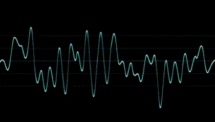

{% load static %}
<!DOCTYPE html>
<html xmlns:th="http://www.thymeleaf.org">
<head>
    <meta charset="UTF-8">
    <meta name="viewport" content="width=device-width, initial-scale=1.0, shrink-to-fit=no">
    <link href="https://cdn.jsdelivr.net/npm/bootstrap@5.1.3/dist/css/bootstrap.min.css" rel="stylesheet" integrity="sha384-1BmE4kWBq78iYhFldvKuhfTAU6auU8tT94WrHftjDbrCEXSU1oBoqyl2QvZ6jIW3" crossorigin="anonymous">
    <script src="https://cdn.rawgit.com/mattdiamond/Recorderjs/08e7abd9/dist/recorder.js"></script>
    <script src="https://ajax.googleapis.com/ajax/libs/jquery/3.3.1/jquery.min.js"></script>
    <style>
        * {
            margin:0;
            padding:0;
        }

        body {
            margin:0;
            padding:0;
            font-family:"맑은 고딕";
            font-size:12px;
            color:#333;
        }

        img {
            border:0;
        }

        a {
            text-decoration:none;
            color:#333;
        }

        ul,
        li {
            list-style:none;
        }

        nav{
            width:220px;
            float: left;
            background-color:#eee;
            /* border-right:1px solid #ddd; */
            /* height:100%  그냥 적용 안됨. 부모개념이 있어야 채워질 수 있음 */
            text-align: center;
            position:fixed; /*공중에 떠서 공간을 차지하지 않음*/
            height:100% /*fixed를 해서 높이 100%가 가능해짐*/
        }
        h1{ font-size:18px;  padding-top:20px; text-align: center }

        button  {
            width: 100%;
            padding: 8px 16px;
            font-size: 16px;
            border-radius: 8px;
            cursor: pointer;
            display:block;
            color:#555;
            text-align: center;
            margin-bottom: 10px;
        }

        button:last-child {
            margin-bottom: 0px;
        }

        button:hover { background-color:yellowgreen; color:white;}
        .nav-link{
        height: 100%
        }

        .top {
            display: flex;
            flex-direction: row;
            justify-content: space-evenly;
            margin-left: 220px;
        }

        .title {
            border: 1px solid#333;
            font-size: 16px;
            width: 400px;
            height: 50px;
            line-height: 50px;
            text-align: center;
            margin-top: 50px;
        }

        .graph {
            width: 130px;
            height: 100px;
            border: 1px solid #333;
            margin-top: 20px;
        }
    </style>
    <title>Document</title>

</head>
<script>
    let detectTF = false;

    function getCookie(name) {
        let cookieValue = null;
        if (document.cookie && document.cookie !== '') {
            const cookies = document.cookie.split(';');
            for (let i = 0; i < cookies.length; i++) {
                const cookie = cookies[i].trim();
                // Does this cookie string begin with the name we want?
                if (cookie.substring(0, name.length + 1) === (name + '=')) {
                    cookieValue = decodeURIComponent(cookie.substring(name.length + 1));
                    break;
                }
            }
        }
        return cookieValue;
    }

    const csrftoken = getCookie('csrftoken');
</script>
</script>
<body>
<nav>
    <h1>감성정보 분석 서비스</h1>
    <br>
{#    {% if username %}#}
        <!-- <li><a href="/v2/demo_analyze_face">표정 분석</a></li>
        <li><a href="/v2/demo_analyze_voice">목소리 분석</a></li>
        <li><a href="/v2/demo_analyze_brain">뇌파 분석</a></li> -->
        <button type="button" onclick="location.href='/v2/demo_analyze_face'">표정분석</button>
        <button type="button" onclick="location.href='/v2/demo_analyze_voice'">목소리분석</button>
        <button type="button" onclick="location.href='/v2/demo_analyze_brain'">뇌파분석</button>
        <button type="button" onclick="location.href='/v2/demo_analyze_graph'">감성 통합정보</button>
{#    {% endif %}#}
</nav>
<div class="top">
    <audio id="snapSound" src="audio/snap.wav" preload = "auto"></audio>
    <!-- d-sm-flex justify-content-between align-items-center mb-4 -->
    <h3 class="title">사용자 목소리 정보 수집 및 분석하고 있습니다.</h3>
    
    <div>
        <div id="voice_loading" style="display:none" class="spinner-grow text-primary" role="status">
            <span class="visually-hidden">Loading...</span>
        </div>
        <div></div>
        <div id="face_loading" style="display:none" class="spinner-grow text-secondary" role="status">
            <span class="visually-hidden">Loading...</span>
        </div>
        <div></div>
        <div id="brainwave_loading" style="display:none" class="spinner-grow text-success" role="status">
            <span class="visually-hidden">Loading...</span>
        </div>
    </div>
    <!-- text-dark mb-0 -->
</div>
<div style="margin-left: 250px; padding: 30px" >
    <table  class="table table-bordered" style="text-align: center;" >
        <thead style=" background-color:yellowgreen; color:white;">
        <tr>
            <th scope="col">Timestamp</th>
            <th scope="col">분석 정보</th>
            <th scope="col">비고</th>

        </tr>
        </thead>
        <tbody>
        {% for log in logResult %}
            <tr>
            <td>{{log.timestamp}}</td>
            <td>{{log.analyzeInfo}}</td>
            <td>{{log.note}}</td>
        {% endfor %}
        </tbody>
    </table>
</div>
    <div id="formats"></div>

    {% if type != 1 %}
        <script>
            detectTF = true;
            setInterval(function () {
                startRecording();
                setTimeout(stopRecording, 5000);
            }, 10000);
        </script>
    <script>
        //webkitURL is deprecated but nevertheless

URL = window.URL || window.webkitURL;

var gumStream;                   //stream from getUserMedia()
var rec;                      //Recorder.js object
var input;                      //MediaStreamAudioSourceNode we'll be recording

var AudioContext = window.AudioContext || window.webkitAudioContext;
var audioContext //audio context to help us record


function startRecording() {
   console.log("recordButton clicked");

   document.getElementById("voice_loading").style.display = "block";
    var constraints = { audio: true, video:false }


   navigator.mediaDevices.getUserMedia(constraints).then(function(stream) {
      console.log("getUserMedia() success, stream created, initializing Recorder.js ...");

      audioContext = new AudioContext();

      document.getElementById("formats").innerHTML="Format: 1 channel pcm @ "+audioContext.sampleRate/1000+"kHz"

      gumStream = stream;

      input = audioContext.createMediaStreamSource(stream);

      rec = new Recorder(input,{numChannels:1})

      rec.record()

      console.log("Recording started");

   }).catch(function(err) {
   });
}

function stopRecording() {
   console.log("stopButton clicked");

   //tell the recorder to stop the recording
   rec.stop();

   //stop microphone access
   gumStream.getAudioTracks()[0].stop();

   //create the wav blob and pass it on to createDownloadLink
   rec.exportWAV(createDownloadLink);
}

function createDownloadLink(blob) {
   console.log()
   var url = URL.createObjectURL(blob);
   var au = document.createElement('audio');
   var li = document.createElement('li');
   var link = document.createElement('a');

   //name of .wav file to use during upload and download (without extendion)
   var filename = "test";

   //add controls to the <audio> element
   au.controls = true;
   au.src = url;

   //upload link
   var upload = document.createElement('a');
   upload.href="#";
   upload.innerHTML = "Upload";
   var xhr=new XMLHttpRequest();
   var fd=new FormData();
   console.log("목소리")
   fd.append("audio_data", blob, filename);
   $.ajax({
         headers: {'X-CSRFToken': csrftoken},
            type : 'POST',
            url : '/v2/demo_voice',
            data : fd,
            dataType: 'json',
            processData: false,    // 반드시 작성
            contentType: false,    // 반드시 작성
            success : function(result) {
                if (result.data.negative > 0.4) {
                }
            }
        });

   document.getElementById("voice_loading").style.display = 'none';
}
    </script>
    {% endif %}
    {% if username %}
    <script src='{% static "assets/js/check.js" %}'></script>
    {% endif %}
    <script src="{% static 'assets/bootstrap/js/bootstrap.min.js' %}"></script>
    <script src="{% static 'assets/js/chart.min.js' %}"></script>
    <script src="{% static 'assets/js/bs-init.js' %}"></script>
    <script src="{% static 'assets/js/theme.js' %}"></script>
</body>
</html>